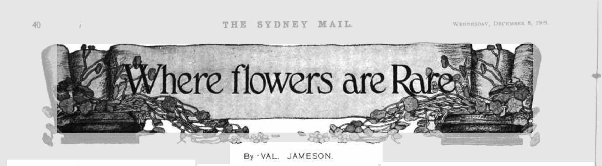

![]()
import rpy2
rpy2.__version__'3.5.4'In the last post on this blog I showed how Apache Arrow makes it possible to hand over data sets from R to Python (and vice versa) without making wasteful copies of the data.
The solution I outlined there was to use the reticulate package to conduct the handover, and rely on Arrow tools both sides to manage the data. In one sense it’s a perfectly good solution to the problem… but it’s a solution tailor made for R users who need access to Python. When viewed from the perspective of a Python user who needs access to R, it’s a little awkward to have an R package (reticulate) governing the handover.1 Perhaps we can find a more Pythonic way to approach this?
A solution to our problem is provided by the rpy2 library that provides an interface to R from Python, and the rpy2-arrow extension that allows it to support Arrow objects. Let’s take a look, shall we?

For the purposes of this post I’ll create a fresh conda environment that I’ll call “continuation”, partly because this post is a continuation of the previous one and partly because the data set I’ll use later is taken from a database of serialised fiction called To Be Continued….
I was able install most packages I need through conda-forge, but for rpy2 and rpy2-arrow I was only able to do so from pypi so I had to use pip for that. So the code for setting up my Python environment, executed at the terminal, was as follows:
conda create -n continuation
conda install -n continuation pip pyarrow pandas jupyter
conda activate continuation
pip install rpy2 rpy2-arrowAs long as I render this post with the “continuation” environment active everything works smoothly.3
The purpose of the rpy2 library is to allow users to call R from Python, typically with the goal of allowing access to statistical packages distributed through CRAN. I’m currently using version 3.5.4, and while this blog post won’t even come close to documenting the full power of the library, the rpy2 documentation is quite extensive. To give you a bit of a flavour of it, let’s import the library:
import rpy2
rpy2.__version__'3.5.4'This does not in itself give us access to R. That doesn’t happen until we explicitly import either the robjects module (a high level interface to R) or import the rinterface model (a low level interface) and call rinterface.initr(). This post won’t cover rinterface at all; we can accomplish everything we need to using only the high level interface provided by robjects. So let’s import the module and, in doing so, start R running as a child process:
import rpy2.robjects as robjects
R version 4.2.1 (2022-06-23) 🌈You’ll notice that this prints a little startup message. If you’re following along at home you’ll probably see something different on your own machine: most likely you’ll see the standard R startup message here. It’s shorter in this output because I modified my .Rprofile to make R less chatty on start up.4
Anyway, our next step is to load some packages. In native R code we’d use the library() function for this, but rpy2 provides a more Pythonic approach. Importing the packages submodule gives us access to importr(), which is allows us to load packages. The code below illustrates how you can expose the base R package and the utils R package (both of which come bundled with any minimal R installation) to Python:
import rpy2.robjects.packages as pkgs
base = pkgs.importr("base")
utils = pkgs.importr("utils")Once we have access to utils we can call the R function install.packages() to install additional packages from CRAN. However, at this point we need to talk a little about how names are translated by rpy2. As every Python user would immediately notice, install.packages() is not a valid function name in Python: the dot is a special character and not permitted within the name of a function. In contrast, although not generally recommended in R except in special circumstances,5 function names containing dots are syntactically valid in R and there are functions that use them. So how do we resolve this?
In most cases, the solution is straightforward: rpy2 will automatically convert dots in R to underscores in Python, and so in this instance the function name becomes install_packages(). For example, if I want to install the fortunes package using rpy2, I would use the following command:6
utils.install_packages("fortunes")There are some subtleties around function name translation, however. I won’t talk about them in this post, other to mention that the documentation discusses this in the section on calling functions.
In any case, now that I have successfully installed the fortunes package I can import it, allowing me to call the fortune() function:
ftns = pkgs.importr("fortunes")
ftn7 = ftns.fortune(7)
print(ftn7)
What we have is nice, but we need something very different.
-- Robert Gentleman
Statistical Computing 2003, Reisensburg (June 2003)
I’m rather fond of this quote, and it seems very appropriate to the spirit of what polyglot data science is all about. Whatever language or tools we’re working in, we’ve usually chosen them for good reason. But there is no tool that works all the time, nor any language that is ideal for every situation. Sometimes we need something very different, and when we do it is very helpful if our tools able to talk fluently to each other.
We’re now at the point that we can tackle the problem of transferring data from Python to R, but in order to do that we’ll need some data…

I’ve given you so many teasers about the data set for this post that it almost feels a shame to spoil it by revealing the data, but all good things must come to an end I suppose. The data I’m using are taken from the To Be Continued… database of fiction published in Australian newspapers during the 19th and early 20th century. Originally collected using the incredibly cool Trove resource run by the National Library of Australia, the To Be Continued… data are released under a CC-BY-4.0 licence and maintained by Katherine Bode and Carol Hetherington. I’m not using the full data set here, only the metadata. In the complete database you can find full text of published pieces, and in the Trove links you can find the digitised resources from which they were sourced, but I don’t need that level of detail here. All I need is an interesting data table that I can pass around between languages. For that, the metadata alone will suffice!
To give you a sense of what the data set (that is, the restricted version I’m using here) looks like, let’s fire up pandas and take a peek at the structure of the table. It’s stored as a CSV file, so I’ll call read_csv() to import the data:
import pandas
fiction = pandas.read_csv("fiction.csv", low_memory = False)
fiction.head()| Trove ID | Common Title | Publication Title | Start Date | End Date | Additional Info | Length | Curated Dataset | Identified Sources | Publication Source | ... | Other Names | Publication Author | Gender | Nationality | Nationality Details | Author Details | Inscribed Gender | Inscribed Nationality | Signature | Name Category | |
|---|---|---|---|---|---|---|---|---|---|---|---|---|---|---|---|---|---|---|---|---|---|
| 0 | 1 | The Mystery of Edwin Drood | The Mystery of Edwin Drood | 1871-03-04 | 1871-06-03 | NaN | 0.0 | Y | LCVF | NaN | ... | NaN | Dickens, Charles | Male | British | NaN | LCVF | Male | British | NaN | Attributed |
| 1 | 2 | The Mystery of Edwin Drood | The Mystery of Edwin Drood | 1871-03-07 | 1871-05-16 | NaN | 0.0 | Y | LCVF | NaN | ... | NaN | Dickens, Charles | Male | British | NaN | LCVF | Male | British | NaN | Attributed |
| 2 | 3 | Sporting Recollections in Various Countries | Sporting Recollections in Various Countries | 1847-06-16 | 1847-07-07 | NaN | 0.0 | Y | WPEDIA | Sunday Times | ... | NaN | Viardot, M. Louis | Male | French | NaN | WPEDIA | Male | British | NaN | Attributed |
| 3 | 4 | Brownie's Triumph | The Jewels | 1880-05-08 | 1880-08-14 | NaN | 0.0 | Y | TJW | NaN | ... | Sarah Elizabeth Forbush Downs; Downs, Mrs Geor... | Unattributed | Female | American | NaN | WPEDIA | Uninscribed | British | NaN | Unattributed |
| 4 | 5 | The Forsaken Bride | Abandoned | 1880-08-21 | 1880-12-18 | Fiction. From English, American and Other Peri... | 0.0 | Y | TJW | NaN | ... | Sarah Elizabeth Forbush Downs; Downs, Mrs Geor... | Unattributed | Female | American | NaN | WPEDIA | Uninscribed | British | NaN | Unattributed |
5 rows × 28 columns
Okay, that’s helpful. We can see what all the columns are and what kind of data they contain. I’m still pretty new to data science workflows in Python, but it’s not too difficult to do a little bit of data wrangling with Pandas. For instance, we can take a look at the distribution of nationalities among published authors. The table shown below counts the number of distinct publications (Trove IDs) and authors for each nationality represented in the data:
fiction[["Nationality", "Trove ID", "Publication Author"]]. \
groupby("Nationality"). \
nunique()| Trove ID | Publication Author | |
|---|---|---|
| Nationality | ||
| American | 3399 | 618 |
| Australian | 4295 | 757 |
| Australian/British | 95 | 12 |
| Austrian | 3 | 2 |
| British | 10182 | 1351 |
| British/American | 2 | 2 |
| Canadian | 185 | 29 |
| Dutch | 1 | 1 |
| English | 2 | 2 |
| French | 187 | 64 |
| German | 39 | 15 |
| Hungarian | 2 | 1 |
| Irish | 63 | 33 |
| Italian | 12 | 1 |
| Japanese | 1 | 1 |
| Multiple | 3 | 2 |
| New Zealand | 67 | 23 |
| Polish | 1 | 1 |
| Russian | 18 | 13 |
| Scottish | 2 | 2 |
| South African | 14 | 5 |
| Swedish | 1 | 1 |
| Swiss | 2 | 1 |
| United States | 2 | 2 |
| Unknown | 13133 | 2692 |
| Unknown, not Australian | 882 | 88 |
It would not come as any surprise, at least not to anyone with a sense of Australian history, that there were far more British authors than Australian authors published in Australian newspapers during that period. I was mildly surprised to see so many American authors represented though, and I have nothing but love for the lone Italian who published 12 pieces.
Now that we have a sense of the data, let’s add Arrow to the mix!
To give ourselves access to Apache Arrow from Python we’ll use the PyArrow library. Our immediate goal is to convert the fiction data from a Pandas DataFrame to an Arrow Table. To that end, pyarrow supplies a Table object with a from_pandas() method that we can call:
import pyarrow
fiction2 = pyarrow.Table.from_pandas(fiction)
fiction2pyarrow.Table
Trove ID: int64
Common Title: string
Publication Title: string
Start Date: string
End Date: string
Additional Info: string
Length: double
Curated Dataset: string
Identified Sources: string
Publication Source: string
Newspaper ID: int64
Newspaper: string
Newspaper Common Title: string
Newspaper Location: string
Newspaper Type: string
Colony/State: string
Author ID: int64
Author: string
Other Names: string
Publication Author: string
Gender: string
Nationality: string
Nationality Details: string
Author Details: string
Inscribed Gender: string
Inscribed Nationality: string
Signature: string
Name Category : string
----
Trove ID: [[1,2,3,4,5,...,35491,35492,35493,35494,35495]]
Common Title: [["The Mystery of Edwin Drood","The Mystery of Edwin Drood","Sporting Recollections in Various Countries","Brownie's Triumph","The Forsaken Bride",...,"The Heart of Maureen","His Lawful Wife","Love's Reward","Only a Flirt","The Doctor's Protegee"]]
Publication Title: [["The Mystery of Edwin Drood","The Mystery of Edwin Drood","Sporting Recollections in Various Countries","The Jewels","Abandoned",...,"The Heart of Maureen","His Lawful Wife","Love's Reward","Only a Flirt","The Doctor's Protegee"]]
Start Date: [["1871-03-04","1871-03-07","1847-06-16","1880-05-08","1880-08-21",...,"1914-01-06","1912-10-26","1911-02-04","1916-05-06","1911-11-25"]]
End Date: [["1871-06-03","1871-05-16","1847-07-07","1880-08-14","1880-12-18",...,"1914-01-06","1912-10-26","1911-02-04","1916-05-06","1911-11-25"]]
Additional Info: [[null,null,null,null,"Fiction. From English, American and Other Periodicals",...,"Published by special arrangement. All rights reserved.","Published by special arrangement. All rights reserved.","Published by special arrangement. All rights reserved.","All Rights Reserved","Published by special arrangement. All rights reserved."]]
Length: [[0,0,0,0,0,...,0,0,0,0,0]]
Curated Dataset: [["Y","Y","Y","Y","Y",...,"N","N","N","N","N"]]
Identified Sources: [["LCVF","LCVF","WPEDIA","TJW","TJW",...,null,null,null,null,null]]
Publication Source: [[null,null,"Sunday Times",null,null,...,null,null,null,null,null]]
...The fiction2 object contains the same data as fiction but it is structured as an Arrow Table, and the data is stored in memory allocated by Arrow. Python itself only stores some metadata and the C++ pointer that refers to the Arrow Table. This isn’t exciting, but it will be important (and powerful!) later in a moment we transfer the data to R.
Speaking of which, we have arrived at the point where we get to do the fun part… seamlessly handing the reins back and forth between Python and R without needing to copy the Arrow Table itself.
To pass Arrow objects between Python and R, rpy2 needs a little help because it doesn’t know how to handle Arrow data structures. That’s where the rpy2-arrow module comes in. As the documentation states:
The package allows the sharing of Apache Arrow data structures (Array, ChunkedArray, Field, RecordBatch, RecordBatchReader, Table, Schema) between Python and R within the same process. The underlying C/C++ pointer is shared, meaning potentially large gain in performance compared to regular arrays or data frames shared between Python and R through the conversion rules included in rpy2.
I won’t attempt to give a full tutorial on rpy2-arrow in this post. Instead, I’ll just show you how to use it to solve the problem at hand. Our first step is to import the conversion tools from rpy_arrow:
import rpy2_arrow.pyarrow_rarrow as pyraHaving done that, the pyarrow_table_to_r_table() function allows us to pass an Arrow Table from Python to R:
fiction3 = pyra.pyarrow_table_to_r_table(fiction2)
fiction3<rpy2.rinterface_lib.sexp.SexpEnvironment object at 0x7f71bfb8a6c0> [RTYPES.ENVSXP]The printed output isn’t the prettiest thing in the world, but nevertheless it does represent the object of interest. On the Python side we have fiction2, a data structure that points to an Arrow Table and enables various compute operations supplied through pyarrow. On the R side we have now created fiction3, a data structure that points to the same Arrow Table and enables compute operations supplied by the R arrow package. In the same way that fiction2 only stores a small amount of metadata in Python, fiction3 stores a small amount of metadata in R. Only this metadata has been copied from Python to R: the data itself remains untouched in Arrow.

We’re almost done, but the tour isn’t really complete until we’ve stepped out of Python entirely, manipulated the object on the R side, and then passed something back to Python. So let’s do that next.
In order to pull off that trick within this quarto document – which is running jupyter under the hood – we’ll need to employ a little notebook magic, again relying on rpy2 to supply all the sparkly bits. To help us out in this situation, the rpy2 library supplies an interface for interactive work that we can invoke in a notebook context like this:
%load_ext rpy2.ipythonNow that we’ve included this line, all I have to do is preface each cell with %%R and the subsequent “Python” code will be passed to R and interpreted there.7 To start with I’ll load the dplyr and arrow packages, using the suppressMessages() function to prevent them being chatty:
%%R
suppressMessages({
library(dplyr)
library(arrow)
})Having loaded the relevant packages, I’ll use the dplyr/arrow toolkit to do a little data wrangling on the fiction3 Table. I’m not doing anything fancy, just a little cross-tabulation counting the joint distribution of genders and nationalities represented in the data using the count() function, and using arrange() to sort the results:
%%R -i fiction3
gender <- fiction3 |>
count(Gender, Nationality) |>
arrange(desc(n)) |>
compute()
genderTable63 rows x 3 columns
$Gender <string>
$Nationality <string>
$n <int64>
See $metadata for additional Schema metadataThe output isn’t very informative, but don’t worry, by the end of the post there will be a gender reveal I promise.8 Besides, the actual values of gender aren’t important right now. In truth, the part that we’re most interested in here is the first line of code. By using %%R -i fiction3 to specify the cell magic, we’re able to access the fiction3 object from R within this cell and perform the required computations.
Oh, and also we now have a new gender object in our R session that we probably want to pull back into Python!
Okay. So we now have an object in the embedded R session that we might wish to access from the Python session and convert to a Python object. First we’ll pass the Arrow Table from R to Python and then convert to a Pandas DataFrame. Here’s how that process works. If you recall from earlier in the post, we imported robjects to start the embedded R session. When we did so, we also exposed robjects.r, which provides access to all objects within that R session. To create a Python object gender2 that refers to the R data structure we created in the last section, here’s what we do:
gender2 = robjects.r('gender')
gender2<rpy2.robjects.environments.Environment object at 0x7f71b6784bc0> [RTYPES.ENVSXP]
R classes: ('Table', 'ArrowTabular', 'ArrowObject', 'R6')
n items: 36Importantly, notice that this is the same object. The gender2 variable still refers to the Arrow Table in R: it’s not a pyarrow table. If we want to convert it to a data structure that pyarrow understands, we can again use the rpy-arrow conversion tools. In this case, we can use the rarrow_to_py_table() function:
gender3 = pyra.rarrow_to_py_table(gender2)
gender3pyarrow.Table
Gender: string
Nationality: string
n: int64
----
Gender: [["Unknown","Male","Female","Male","Female",...,"Both","Female","Female","Female",null]]
Nationality: [["Unknown","British","British","Australian","Australian",...,"Australian/British","British/American","South African","Polish","Australian"]]
n: [[12832,6420,3346,2537,1687,...,1,1,1,1,1]]Just like that, we’ve handed over the Arrow Table from R back to Python. Again, it helps to remember that gender2 is an R object and gender3 is a Python object, but both of them point to the same underlying Arrow Table.
In any case, now that we have gender3 on the Python side, we can use the to_pandas() method from pyarrow.Table to convert it to a pandas data frame:
gender4 = pyarrow.Table.to_pandas(gender3)
gender4| Gender | Nationality | n | |
|---|---|---|---|
| 0 | Unknown | Unknown | 12832 |
| 1 | Male | British | 6420 |
| 2 | Female | British | 3346 |
| 3 | Male | Australian | 2537 |
| 4 | Female | Australian | 1687 |
| ... | ... | ... | ... |
| 58 | Both | Australian/British | 1 |
| 59 | Female | British/American | 1 |
| 60 | Female | South African | 1 |
| 61 | Female | Polish | 1 |
| 62 | None | Australian | 1 |
63 rows × 3 columns
And with that our transition home is complete!
This post has wandered over a few topics, which is perhaps to be expected given the nature of polyglot data science. To make it all work smoothly I needed to think a little about how my Python and R environments are set up: the little asides I buried in footnotes mention the frictions I encountered in getting rpy2 to work smoothly for me, for instance. As someone who primarily uses R it took me a little while to work out how to get quarto to switch cleanly from a knitr engine to a jupyter engine. The R and Python libraries implementing Apache Arrow make it look seamless when we handover data from one language to another – and in some ways they actually do make it seamless in spite of the many little frictions that exist with Arrow, no less than any other powerful and rapidly-growing tool – but a lot of work has gone into making that transition smooth. Whether you’re an R focused developer using reticulate or a Python focused developer who prefers rpy2, the toolkit is there. I’m obviously biased in this because so much of my work revolves around Arrow these days, but at some level I’m still actually shocked that it (and other polyglot tools) works as well as it does. Plus, I’m having a surprising amount of fun teaching myself “Pythonic” ways of thinking and coding, so that’s kind of cool too.
Hopefully this post will help a few other folks get started in this area!
In writing this post I am heavily indebted to Isabella Velásquez, whose fabulous post on calling R from Python with rpy2 helped me immensely. The documentation on integrating PyArrow with R was extremely helpful too! Thank you to Kae Suarez for reviewing this post.
Relatedly, if you’re a Python user blogging in quarto, you are very unlikely to be using the knitr engine to execute code like I did in the last blog post. Instead you’re almost certainly using the jupyter engine. With that in mind, and with the goal of making this post a little more Pythonic, I’m using Jupyter this time.↩︎
A note on image copyright. As far as I can tell all images in this post are public domain. They’re all sourced from Trove and are all over a century old, meaning that they are all covered by the “plus 50 years” rule in Australian copyright law (the current “plus 70” rule does not apply retroactively). The original illustrator is difficult to determine, and given the age of the images so too is any potential copyright holder, but it seems extremely unlikely that any are still covered by any copyright. As always, I will remove any image if I discover that I am incorrect in this.↩︎
Ha ha. Just kidding. Aaaaaaaaactualllllllly, it will probably work smoothly for most people. But there are exceptions, and because I am a foolish tinkerer and have a nonstandard R configuration I am one of them. I have recently made the decision to use the rig manager to configure multiple concurrent R installations on my laptop. This introduces a some complexity, because rig necessarily installs R to non standard locations. Now, rig does the right thing and correctly sets the PATH environment variable so that rpy2 (and bash) can find R, but it does lead to some peculiar behaviour where rpy2 doesn’t find some of the C libraries need. In the rpy2 readme there’s a discussion of this issue. In such cases you need to tweak the LD_LIBRARY_PATH environment variable before starting Python: export LD_LIBRARY_PATH="$(python -m rpy2.situation LD_LIBRARY_PATH)":${LD_LIBRARY_PATH}↩︎
As an aside, it’s worth noting that rpy2 has run R with my default configuration (notwithstanding the fact that my defaults are configured using rig). It hasn’t loaded any specific R environment. It did occur to me that a complete discussion of this topic would also describe how a Python user could use rpy2 to configure the R environment using the renv package for instance, but to be honest that started to feel a little beyond the scope of the post. About the only thing I will mention here is that in this particular use case (namely, passing Arrow objects between R and Python) I would not recommend trying to configure the Python environment and the R environment within the same conda environment. Because that thought occurred to me too. I tried it and oh my… the number of unsolvable conflicts was truly impressive.↩︎
The dot is typically used to denote an S3 method in R, but because R embraces chaos this is not universally adhered to and in any case S3 is… look, I love S3 but as Hadley Wickham once observed it’s an object oriented programming system that absolutely allows you to shoot yourself in the foot if you want to. Anyway. This is not the post for ramblings about the chaotic splendour of R.↩︎
Depending on how blank your R configuration is, you may need to specify which CRAN mirror you want to download the package from before attempting the installation. To do that, include a command like utils.chooseCRANmirror(ind=1) to select the first mirror on the list of known servers.↩︎
Okay, that brings me to something I didn’t really cover in my last post. Some R users might be wondering about what was going on in the last post where I was flipping back and forth between R and Python without apparently doing anything like this. The answer is that when using knitr as the engine rather than jupyter, python code is automatically interpreted with the help of reticulate. However, that feature is exposed by default in the knitr engine so I didn’t need to invoke it explicitly the way I’m doing here in jupyter.↩︎
I’m sorry. The joke was too obvious, yet too hard to resist.↩︎
@online{navarro2022,
author = {Navarro, Danielle},
title = {Data Transfer Between {Python} and {R} with Rpy2 and {Apache}
{Arrow}},
date = {2022-09-16},
url = {https://blog.djnavarro.net/posts/2022-09-16_arrow-and-rpy2},
langid = {en}
}